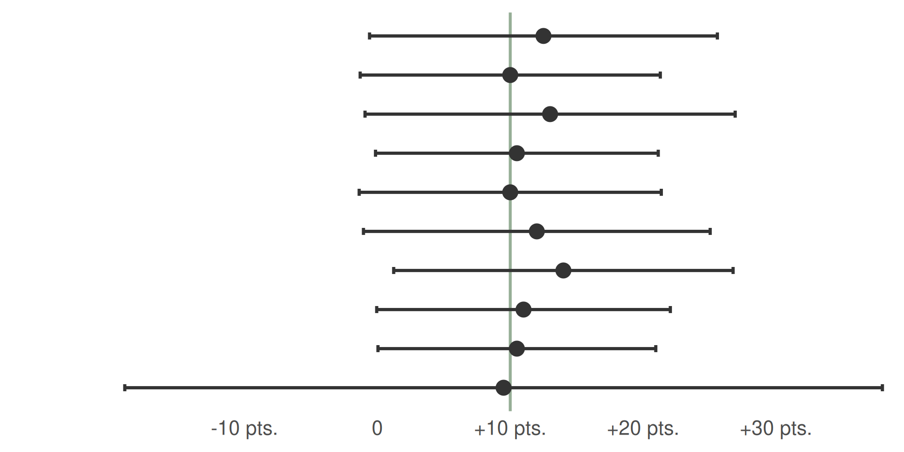
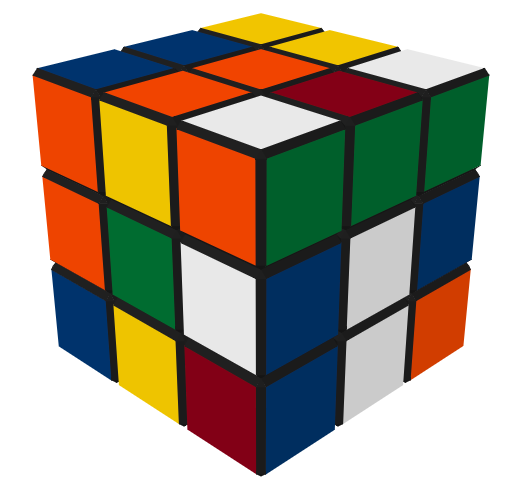

Week 7 - Testing Hypotheses
Confidence Intervals
Intervals that contain the ‘true’ population value of the parameter in 95% of samples.
I’m 95% confident that the population value falls in this interval.
An interval where there is a 95% probability that it contains the population value.
Probability of containing the population value is 0 or 1 but you can’t know which.

p Value
The probability of getting a test statistic at least as extreme as the one you observed
given that H0 is true.
The probability of a chance result.
The probability that HA is true.
The probability that H0 is true.
The Type I error in this study is 0 or 1 we can’t know which.
p = 0.027
p Value
Tells us nothing about importance because p depends on sample size
Provides little evidence about the null hypothesis
Encourages all-or-nothing thinking
Based on long-run probabilities
p is the relative frequency of our observed test statistic relative to all test statistics from an infinite number of experiments.

Choosing and appropriate test
Report Hypothesis
Participants who have practiced will be able to solve a cube.
Null Hypothesis
H0: Participant did not practice
Alternate Hypothesis
HA: Participant practiced


Confusion Matrix
What is the practical interpretation of this analysis for a business audience? Are my estimates precise enough to tell the story I outlined in part (2)?

\(\mu\) = 9.5, C.I. = [0.77, 17.8]

p = 0.032
If p is low the H0 (null) must go.
d = 0.281
Small
Medium
Large
bf10 = 3.770
library(eco230r)

h1$results
X2(8) = 327.875, p < .001, V = 0.207, bf10 = 2.609e+19
h2$results
t(1455.02) = -1.682, p = 0.093, d = -0.067, bf10 = 0.203
h3$results
F(4,34.25) = 44.326, p < .001, ξ = 0.523, bf10 = 8926.807